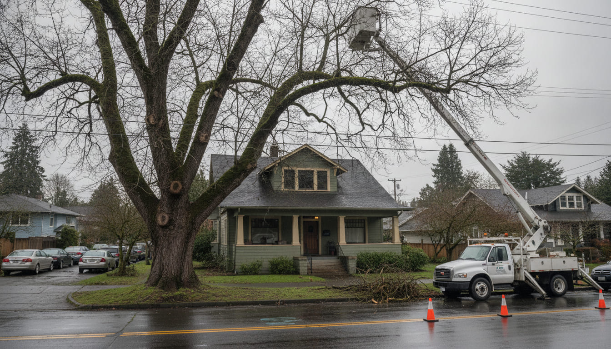
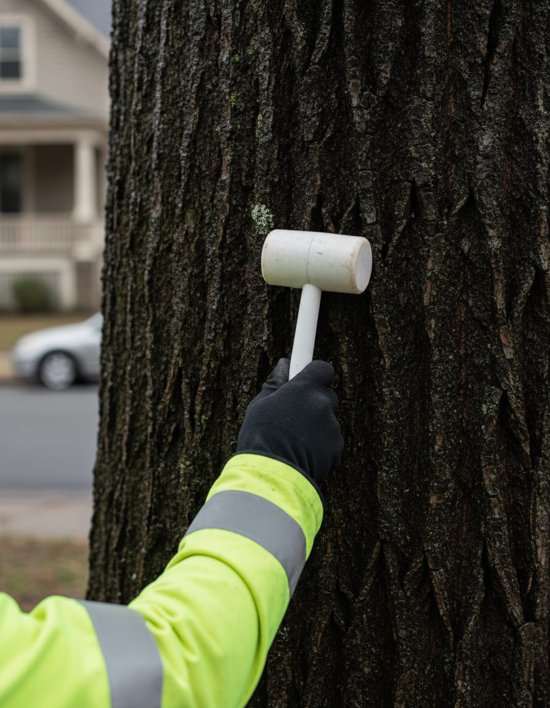
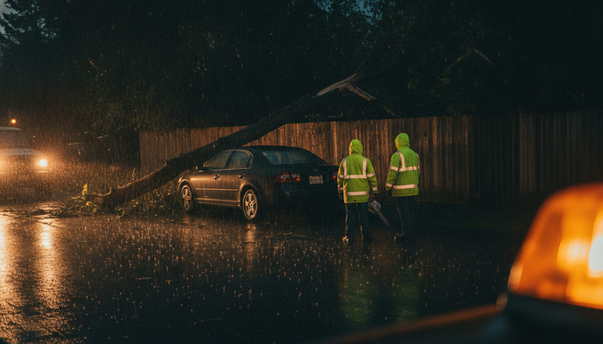
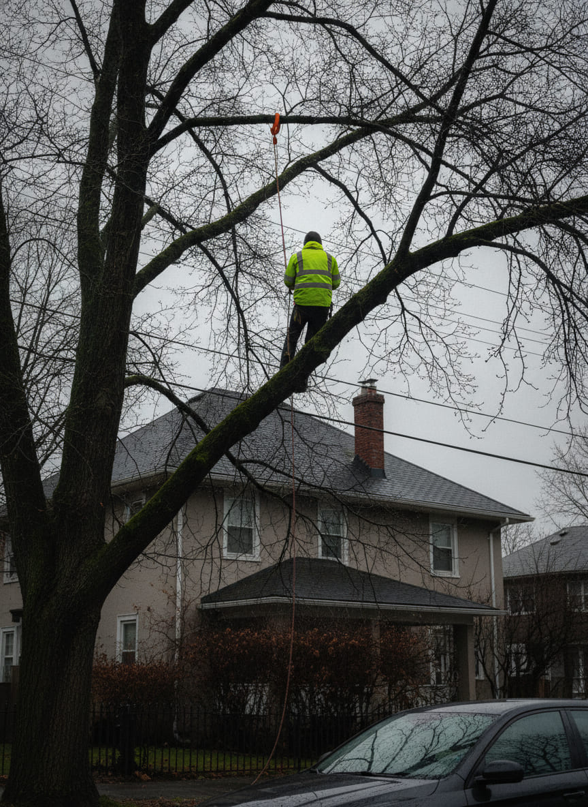
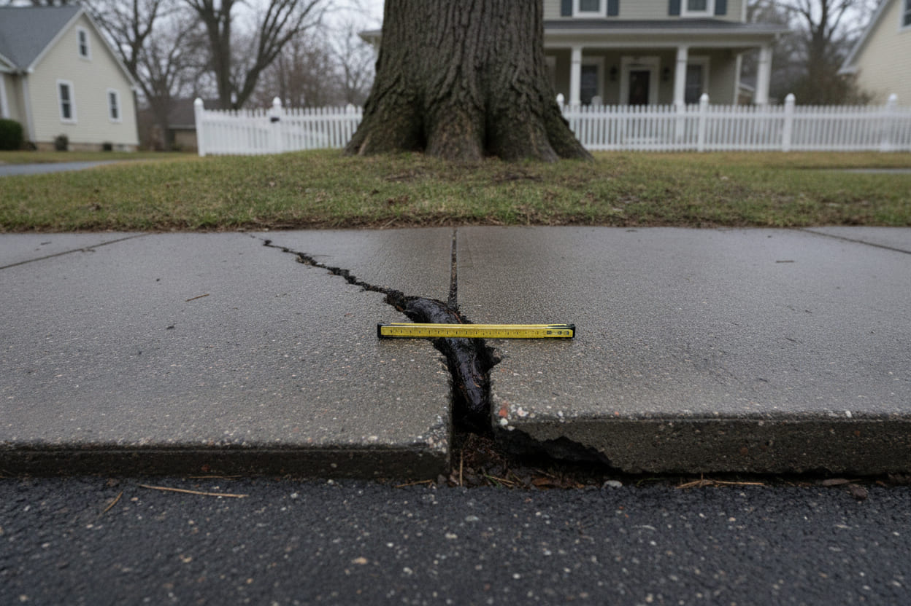

Dormant structural pruning
Codominant stems reduced, included bark addressed, crossing limbs removed. Cuts outside the collar, ANSI A300.
From $640 · single tree under 40 ft

SE 34th & Salmon · American elm, 31 in DBH · end-weight reduction over the porch roof
Portland, Oregon · Tree risk assessment & dormant pruning
A certified assessment, a written report in three working days, and the winter pruning that actually lowers the risk. Houses, back yards and street trees across Portland's east side — and often enough the answer is leave it alone.
Mon–Sat 7:00 AM – 5:30 PM Written report in 3 working days Storm dispatch 24 h, Nov–Mar Title 11 permits filed for you
01 · What we do
Everything here starts from the assessment, not from a truck already parked in your driveway. If the answer is that the tree needs nothing this year, that is what the report will say, and we will not have sold you anything.
Codominant stems reduced, included bark addressed, crossing limbs removed. Cuts outside the collar, ANSI A300.
From $640 · single tree under 40 ft
Weight taken off the outer third, where the lever is longest. Lowers wind sail and the load on a saturated root plate.
From $1,450 · mature conifer
A dynamic cable between codominant stems buys years for a tree that is otherwise sound. Inspected annually, in writing.
From $890 · per cable
Dead limbs over the driveway, the roof, the sidewalk. The ones that fall on a still day in August with no warning at all.
From $480 · per tree
We file with Urban Forestry under Title 11 and we tell you before you pay whether we think it will be granted.
Filing included · quoted after assessment
Ground below grade, chips left or hauled, the hole backfilled so grass takes instead of sinking two years later.
From $210 · plus haul-off

Step one · mallet on the stem02 · The sounding
Sounding is exactly what it sounds like. A rubber mallet against the stem: sound wood rings full and long, a cavity answers dull and short. It is the first thing anyone competent does, it takes ten minutes, and it is right most of the time.
When the mallet leaves a question we drill a resistograph trace and read the density the whole way through. Where the needle goes flat, there is nothing left to hold on to — and how much flat, and where, is the whole decision.
Decay column · 212–268 mm · 26% of the section · sound wood continuous around the load path · tree stays
A quarter of this limb was gone. The tree stayed. Sound wood in the right place holds a tree up, and nobody can tell you which quarter you have from the sidewalk.
Sounding + written assessment
$385Flat. Photographs, the resistograph trace where we take one, a written recommendation, and the permit position if the tree is regulated. Credited against any work you book with us within 90 days.
03 · The dormant window
With the leaves off we can see the whole structure — every codominant stem, every bark inclusion, every dead limb that hides inside summer foliage. The tree isn't spending anything to heal a wound it made in October. Cuts close cleanly in spring, on the tree's own schedule instead of ours.
Birches and some maples bleed sap if we wait too long, so late dormancy has an end, and the end is the buds. Anything that flowers in spring gets pruned after it flowers, not before. That is the whole calendar, and it is why we are busiest when everyone else has gone quiet.
The dormant window
Today is Dec 14 · 63 days left in leaf-off
04 · Storm dispatch
Arctic air pools in the Columbia Basin. When a low comes up the coast, that cold air drains west through the Gorge — a sea-level gap straight through the mountains — and spills over the east side of the city at fifty to seventy miles an hour. Warm Pacific rain falls into that cold layer and freezes on contact. This is not weather in general. It is a specific piece of geography, and it points at your neighbourhood.
Add a winter of saturated soil and the root plate rotates in the mud instead of the trunk breaking. That is how Portland loses a hundred-year Douglas-fir in one night. Taking end weight off the top third in December is how it doesn't.

We keep one crew on call from November through March. Amber beacon, chip truck, and a saw that is already sharp. We clear what is dangerous first and come back in daylight for the rest — cutting a loaded limb in the dark is how people get hurt.
First two hours on site, including make-safe cutting and haul-off of what we drop. Anything beyond that is quoted in daylight, before we start.
05 · The short list
A company that lists what it turns down is a company that has turned work down. Here is ours, in the order we get asked.
The photograph is the second item, and it is the expensive one: rope, a friction saver over the limb, and nobody's spikes in a tree that is staying. Gaffs are faster. They are also a wound in the cambium every eighteen inches, all the way up.

Rope and friction saver · no spikesTopping doesn't make a tree safer. It makes a tree full of weak regrowth attached to nothing, and it fails in about five years — usually onto the thing you were worried about in the first place. Those flat round scars on old street trees are topping cuts, and the elm at the top of this page is still carrying somebody's from thirty years ago.
Every gaff is a wound in the cambium, all the way up. If the tree is staying, we climb it on rope and a friction saver, and it takes longer.
Urban Forestry decides, not us. We'll tell you our read before you pay for anything, and if the tree is a Heritage Tree we'll tell you that too — including that the hearing is public.
06 · The streets we know
Dominant species American elm · Planted 1907–1910
About thirteen hundred street trees, most of them American elms planted between 1907 and 1910, and the neighbourhood has been inoculating them against Dutch elm disease since the mid-nineties. The city still loses roughly thirty-five elms a year. On these blocks we work slowly and we report anything that flags, whether or not it is your tree.
Watch Western redcedar, top dieback · Cause drought
Big conifers on small lots, planted when the lots were bigger. Western redcedar is the one to watch: the tops brown out after a dry summer and people assume it's a disease. It usually isn't — it's drought, and the fix is water, not a saw.
Watch Bigleaf maple, epiphyte load · Factor slope + wind
Slope, wind exposure and enormous old bigleaf maples with more moss on them than leaves. Epiphyte load matters here in a way it doesn't on the flat. Two trees on the same street can be in completely different trouble.
Watch Street sweetgum, Norway maple · Issue sidewalk lift
Street sweetgums and Norway maples lifting sidewalks, and homeowners getting told the tree has to come out. Sometimes it does. More often it's a root-pruning and paving question, and that conversation is cheaper than the removal.

Three inches of lift · SE WoodstockService areaLadd's Addition · Sellwood-Moreland · Eastmoreland · Mt. Tabor · Laurelhurst · Woodstock · Brentwood-Darlington · Foster-Powell · the West Hills.
07 · The crew
Owner · ISA Certified Arborist
Does the soundings and signs the reports. If there is a resistograph trace in your file, Hollis drilled it and Hollis will explain it to you standing under the tree.
Lead climber
Fourteen winters in the canopy. Rope and friction saver on anything that's staying, and the person who decides where a limb is actually going to go.
Dispatch & permits
Answers the storm line at two in the morning and files the Title 11 paperwork the next week. Ray will tell you honestly how long the permit is going to take.
Call, or send an email with your cross streets and a photograph of the whole tree from across the street. We'll tell you on the phone whether it sounds like something that needs looking at this month or something that can wait until next winter.
Call (503) 555-0184 Email the crew
We answer the phone ourselves. If we're up a tree, leave your cross streets and we'll call back the same evening — and in storm season the line is answered whatever the hour.
Questions we get every December